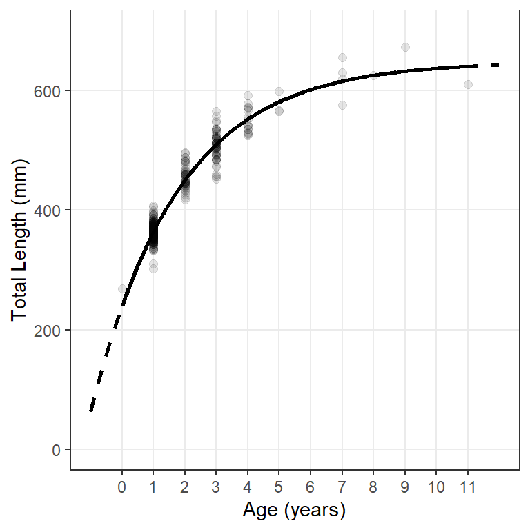
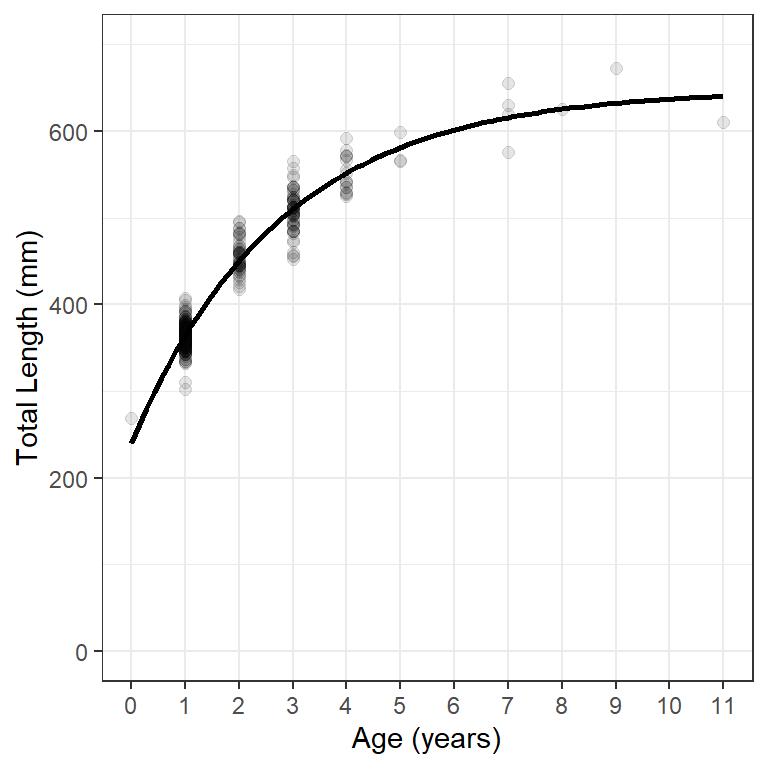
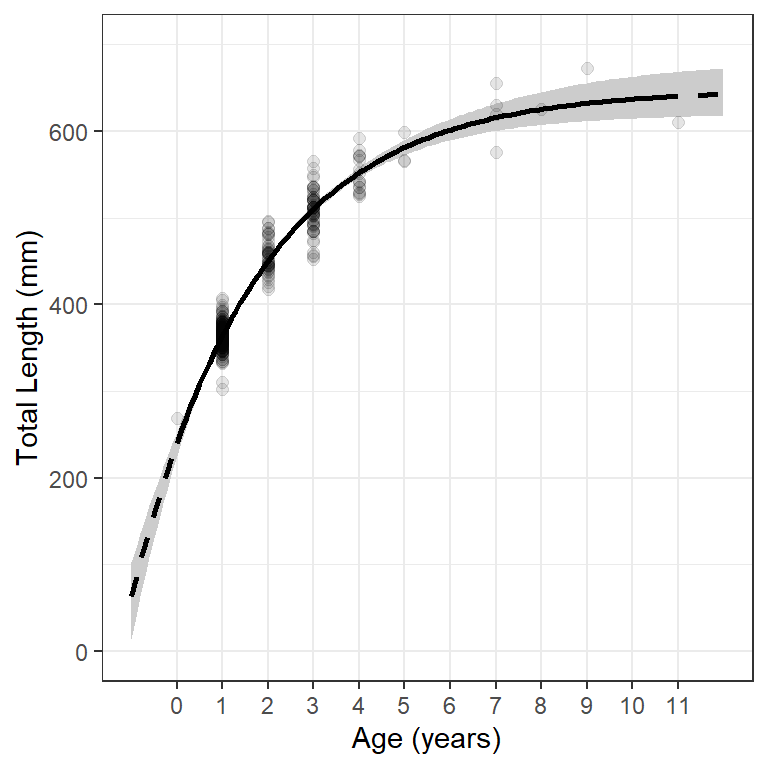
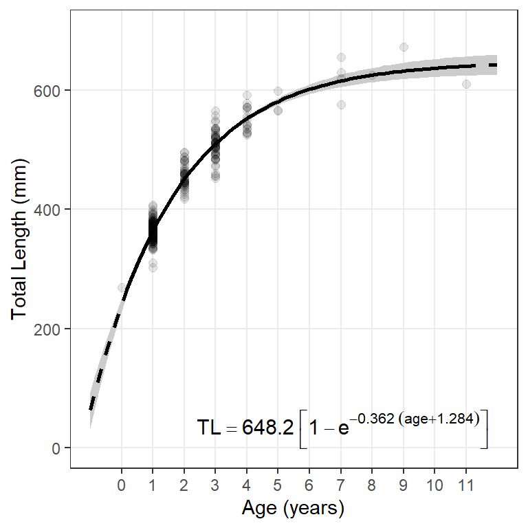

library(FSA) # for vbFuns(), vbStarts(), confint.bootCase(), headtail()
library(car) # for Boot()
library(dplyr) # for filter(), mutate()
library(ggplot2)
theme_set(theme_bw())
Note
The following packages are loaded for use below. The data are also from FSAdata, which is not loaded below. I also set the default ggplot theme to theme_bw() for a classic “black-and-white” plot (rather than the default plot with a gray background).
Introduction
The most common questions that I receive through the fishR website are related to fitting a von Bertalanffy growth function (VBGF) to data and viewing the results. In this post, I briefly demonstrate how to fit a VBGF to a single group of data and then provide several options for how to view the fit of the function to those data.
In this post I will use data on the lengths and ages of Lake Erie Walleye (Sander vitreus) captured during October-November, 2003-2014. These data are available in FSAdata package and formed many of the examples in Ogle et al. (2017). My primary interest here is in the tl (total length in mm) and age variables1(https://fishr-core-team.github.io/FSAdata/reference/WalleyeErie2.html).]. I focus on female Walleye from location “1” captured in 2014 in this example.2
1 See more details about the data
2 For succinctness, I also removed year and sex as they only had one category after filtering and three variables related to the location of capture.
data(WalleyeErie2,package="FSAdata")
wf14T <- WalleyeErie2 |>
filter(year==2014,sex=="female",loc==1) |>
select(-year,-sex,-setID,-loc,-grid)
headtail(wf14T)#R| tl w mat age
#R| 1 445 737 immature 2
#R| 2 528 1571 mature 4
#R| 3 380 506 immature 1
#R| 323 488 1089 immature 2
#R| 324 521 1408 mature 3
#R| 325 565 1745 mature 3
Fitting the VBGF
Methods for fitting a von Bertalannfy growth function (VBGF) are detailed in Ogle (2016) and Ogle et al. (2017). Thus, this methodology will only be briefly explained here.
A function for the typical VBGF is constructed with vbFuns().3
3 Other parameterizations of the VBGF can be used with param= in vbFuns() as described in its documentation.
( vb <- vbFuns(param="Typical") )#R| function (t, Linf, K = NULL, t0 = NULL)
#R| {
#R| if (length(Linf) == 3) {
#R| K <- Linf[[2]]
#R| t0 <- Linf[[3]]
#R| Linf <- Linf[[1]]
#R| }
#R| Linf * (1 - exp(-K * (t - t0)))
#R| }
#R| <bytecode: 0x0000018af463a068>
#R| <environment: 0x0000018af4672188>Some of the methods below use the fact that the three parameters of the typical VBGF (\(L_{\infty}\), \(K\), \(t_{0}\)) can be given to this function separately (in that order) or as a vector (still in that order). For example, both lines below can be used to predict the mean length for an age-3 fish with the given VBGF parameters.4
4 The paramters could be given in a different order but would need to be named; e.g., vb(3,t0=-0.5,K=0.3,Linf=300).
vb(3,300,0.3,-0.5)#R| [1] 195.0187tmp <- c(300,0.3,-0.5)
vb(3,tmp)#R| [1] 195.0187Reasonable starting values for the optimization algorithm may be obtained with vbStarts(), where the first argument is a formula of the form lengths~ages where lengths and ages are replaced with the actual variable names that contain the observed lengths and ages, respectively, and data= is set to the data frame that contains those variables.
( f.starts <- vbStarts(tl~age,data=wf14T) )#R| $Linf
#R| [1] 645.2099
#R|
#R| $K
#R| [1] 0.3482598
#R|
#R| $t0
#R| [1] -1.548925The nls() function is typically used to estimate parameters of the VBGF from the observed data. The first argument is a formula that has lengths on the left-hand-side and the VBGF function created above on the right-hand-side. The VBGF function has the ages variable as its first argument and then Linf, K, and t0 as the remaining arguments (just as they appear here). Again, the data frame with the observed lengths and ages is given to data= and the starting values derived above are given to start=.
f.fit <- nls(tl~vb(age,Linf,K,t0),data=wf14T,start=f.starts)The parameter estimates are extracted from the saved nls() object with coef().
coef(f.fit)#R| Linf K t0
#R| 648.208364 0.361540 -1.283632Bootstrapped confidence intervals for the parameter estimates are computed by giving the saved nls() object to Boot() and giving the saved Boot() object to confint().
f.boot1 <- Boot(f.fit) # Be patient! Be aware of some non-convergence
confint(f.boot1)#R| Bootstrap bca confidence intervals
#R|
#R| 2.5 % 97.5 %
#R| Linf 619.2082363 682.2018777
#R| K 0.3049448 0.4290073
#R| t0 -1.5180162 -1.0576519
Simple Model Fit with stat_function()
In these examples, all “layers” of the plot will use the same data. Thus, data= and the aes()thetic mappings are defined in ggplot(). Observed lengths and ages are added to the plot with geom_point(). The points in Figure 1 were made slightly larger than the default (with size=) and also with a fairly low transparency value to handle considerable over-plotting. The scale_y_continuous() and scale_x_continuous() functions are used to control aspects of y- and x-axes, respectively. Labels for axes are given in name=, minimum and maximum limits for the asis are in limits=, and specific major breaks for the axis are in breaks=.5 Finally, the fitted line is added to the plot with stat_function() using the VBGF function created above in fun= and a list of arguments to this function in args=.6 In Figure 1 I made the model line a little wider than the default. Finally the theme() was modified to remove the minor grid lines from the x-axis.
5 seq(0,700,100) makes a vector of numbers from 0 to 700 in increments of 100 and 0:11 makes a vector of integers from 0 to 11.
6 The usage here exploits the fact that all three parameters to the VBGF can be given in the first parameter argument, Linf=.
ggplot(data=wf14T,aes(x=age,y=tl)) +
geom_point(size=2,alpha=0.1) +
scale_y_continuous(name="Total Length (mm)",
limits=c(0,700),breaks=seq(0,700,100)) +
scale_x_continuous(name="Age (years)",breaks=0:11) +
stat_function(fun=vb,args=list(Linf=coef(f.fit)),linewidth=1) +
theme(panel.grid.minor.x=element_blank())
The model line can be shown outside the range of the data by including minimum and maximum values over which to evaluate the function in xlim= in stat_function(). In Figure 2 I add a dashed line for the model that includes evaluation at ages outside the observed range of ages (first stat_function()) and the plotted the model line for observed ages on top of that (second stat_function()). This gives the impression of using a dashed line for the ages that would be extrapolated.7
7 I would change the axis expansion factors here to clean this plot up a bit.
ggplot(data=wf14T,aes(x=age,y=tl)) +
geom_point(size=2,alpha=0.1) +
scale_y_continuous(name="Total Length (mm)",limits=c(0,700)) +
scale_x_continuous(name="Age (years)",breaks=0:11) +
stat_function(fun=vb,args=list(Linf=coef(f.fit)),
xlim=c(-1,12),linewidth=1,linetype="dashed") +
stat_function(fun=vb,args=list(Linf=coef(f.fit)),linewidth=1) +
theme(panel.grid.minor.x=element_blank())
Simple Model Fit with geom_smooth()
Figure 1 can also be produced using geom_smooth() (Figure 3), which can use nls() to fit the VBGF “behind the scenes.” For this purpose geom_smooth() requires that method= be "nls" and that se=FALSE.8 In addition, methods.args= takes required arguments for fitting the VBGF in nls(). Minimum required arguments for fitting the VBGF are the VBGF formula= and start=ing values as shown for nls() in the previous section.
8 se=FALSE is required because this argument is not implemented in nls().
ggplot(data=wf14T,aes(x=age,y=tl)) +
geom_point(size=2,alpha=0.1) +
scale_y_continuous(name="Total Length (mm)",limits=c(0,700)) +
scale_x_continuous(name="Age (years)",breaks=0:11) +
geom_smooth(method="nls",se=FALSE,
method.args=list(formula=y~vb(x,Linf,K,t0),start=f.starts),
color="black",linewidth=1) +
theme(panel.grid.minor.x=element_blank())
Simple Model Fit with Predicted Values
Figure 1 and Figure 2 can also be constructed from lengths predicted at a variety of ages “outside” of any ggplot() layers. For this to work below, a new function must be created that has only the nls() object as an argument. This requires a bit of sleight-of-hand where we will assume that the ages to make the predictions at are in a vector called ages. The function is created below and is called predict2().
predict2 <- function(x) predict(x,data.frame(age=ages))I then create a vector of ages over which the fitted model will be evaluated. In this case I will extend this range outside the observed ages (to -1 and 12) and make the sequence in increments of 0.1.9 The mean length at each of these ages is then predicted with the function just created. Both results are assigned to a data frame called preds1 below.
9 Use smaller increments to make the line produced further below more smooth.
ages <- seq(-1,12,0.1)
pred1 <- data.frame(age=ages,
plen=predict2(f.fit))
headtail(pred1)#R| age plen
#R| 1 -1.0 63.17547
#R| 2 -0.9 83.94897
#R| 3 -0.8 103.98483
#R| 129 11.8 642.48843
#R| 130 11.9 642.69154
#R| 131 12.0 642.88743These predicted mean lengths-at-age can then be used to add a model line to a plot of observed lengths-at-age with geom_line(). However, because the observed and predicted data are in different data frames, the data and mapped aesthetics should be declared within the appropriate geoms rather than within ggplot(). For example, geom_point() is used below to add the observed data to the plot and geom_line() is used below to add the modeled line. Note below that separate geom_line()s are used to show the modeled line over extrapolated and observed ages.10 The results in Figure 4 reproduce Figure 2.
10 Also note the use of filter() to reduce the predicted lengths-at-age to the observed ages.
ggplot() +
geom_point(data=wf14T,aes(x=age,y=tl),size=2,alpha=0.1) +
geom_line(data=pred1,aes(x=age,y=plen),linewidth=1,linetype="dashed") +
geom_line(data=filter(pred1,age>=0,age<=11),aes(x=age,y=plen),linewidth=1) +
scale_y_continuous(name="Total Length (mm)",limits=c(0,700)) +
scale_x_continuous(name="Age (years)",breaks=0:11) +
theme(panel.grid.minor.x=element_blank())
Model Fit with Confidence Region
The main reason for introducing the idea of constructing a graphic from predicted values is that it will give us the opportunity to add a confidence ribbon to the graphic. Bootstrapped samples of predictions of mean length at each age given the VBGF are constructed by giving Boot() (from car) the saved nls() object AND the new prediction function (created above) in f=. The object returned from Boot() is then given to confint() to extract the confidence intervals for the mean length at each age. These results are then wrapped into a data frame with the vector of ages and the predicted mean lengths at each age.11
11 The code below is for all ages between -1 and 12 in increments of 0.1 as ages was created above.
# Be patient! Be aware of some non-convergence
pred1 <- data.frame(ages,predict2(f.fit),
confint(Boot(f.fit,f=predict2)))
names(pred1) <- c("age","plen","LCI","UCI")
headtail(pred1)#R| age plen LCI UCI
#R| V1 -1.0 63.17547 13.41976 102.2830
#R| V2 -0.9 83.94897 38.83650 119.4368
#R| V3 -0.8 103.98483 63.37520 136.0909
#R| V129 11.8 642.48843 617.53271 671.7810
#R| V130 11.9 642.69154 617.53281 672.1099
#R| V131 12.0 642.88743 617.63552 672.4580A confidence band for the mean lengths at each age is then added to the plot with geom_ribbon(), noting the use of ymin=LCI and ymax=UCI. The fill= will be the color of the enclosed ribbon. I added geom_ribbon() first so that it would sit behind the points and model lines. The results is shown in Figure 5.
ggplot() +
geom_ribbon(data=pred1,aes(x=age,ymin=LCI,ymax=UCI),fill="gray90") +
geom_point(data=wf14T,aes(y=tl,x=age),size=2,alpha=0.1) +
geom_line(data=pred1,aes(x=age,y=plen),linewidth=1,linetype="dashed") +
geom_line(data=filter(pred1,age>=0,age<=11),aes(x=age,y=plen),linewidth=1) +
scale_y_continuous(name="Total Length (mm)",limits=c(0,700)) +
scale_x_continuous(name="Age (years)",breaks=0:11) +
theme(panel.grid.minor.x=element_blank())
Add Equation to Plot
The following function can be used to extract the model coefficients from nls() object and place them into a “plotmath” format to be added to the ggplot graph. The object returned from this function can be added to the ggplot graph with annotate() as shown below.12
12 The x=, y=, hjust=, and vjust= arguments are used to position and justify the text and may take some trial-and-error to get what you want.
makeVBEqnLabel <- function(fit,digits=c(1,3,3)) {
# Isolate coefficients (and control decimals)
cfs <- coef(fit)
Linf <- formatC(cfs[["Linf"]],format="f",digits=digits[1])
K <- formatC(cfs[["K"]],format="f",digits=digits[2])
# Handle t0 differently because of minus in the equation
t0 <- cfs[["t0"]]
t0 <- paste0(ifelse(t0<0,"+","-"),formatC(abs(t0),format="f",digits=digits[3]))
# Put together and return
paste0("TL==",Linf,"~bgroup('[',1-e^{-",K,"~(age",t0,")},']')")
}
ggplot() +
geom_ribbon(data=pred1,aes(x=age,ymin=LCI,ymax=UCI),fill="gray90") +
geom_point(data=wf14T,aes(y=tl,x=age),size=2,alpha=0.1) +
geom_line(data=pred1,aes(x=age,y=plen),linewidth=1,linetype="dashed") +
geom_line(data=filter(pred1,age>=0,age<=11),aes(x=age,y=plen),linewidth=1) +
scale_y_continuous(name="Total Length (mm)",limits=c(0,700)) +
scale_x_continuous(name="Age (years)",breaks=0:11) +
theme(panel.grid.minor.x=element_blank()) +
annotate(geom="text",label=makeVBEqnLabel(f.fit),parse=TRUE,
size=4,x=Inf,y=-Inf,hjust=1.1,vjust=-0.5)
References
Ogle, D. H. 2016. Introductory Fisheries Analyses with R. CRC Press, Boca Raton, FL.
Ogle, D. H., T. O. Brenden, and J. L. McCormick. 2017. Growth Estimation: Growth Models and Statistical Inference. Pages 265–359 in M. C. Quist and D. A. Isermann, editors. Age and Growth of Fishes: Principles and Techniques. American Fisheries Society, Bethesda, MD.
Reuse
Citation
BibTeX citation:
@online{h.ogle2019,
author = {Derek H. Ogle},
title = {Von {Bertalanffy} {Growth} {Plots} {I}},
date = {2019-12-31},
url = {https://fishr-core-team.github.io/fishR//blog/posts/2019-12-31_vonB_plots_1},
langid = {en}
}
For attribution, please cite this work as:
Derek H. Ogle. 2019, December 31. von Bertalanffy Growth Plots I. https://fishr-core-team.github.io/fishR//blog/posts/2019-12-31_vonB_plots_1.